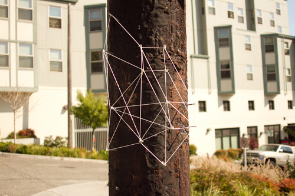

NEPO 5k DON'T RUN in pictures:
Tony Sonnenberg as Captain Dirty Bear spreading golden glitter around the city. Photo by Jeffry Mitchell.
(Un)run registration by Vis-a-Vis Society at the starting line in Occidental park. They handed out over 300 motion verbs to NEPO participants! Photo by Ryan Molenkamp via.
A 'line' of poetry from Susan Parr's Barcode poem. Photo by Susan Parr.
Seth Damm walking his "Mobile Home" through the International District accompanied by a sleepwalker Lorna. Photo by Nancy Leedy.

Nail and Thread drawings on telephone poles by Ollie Glatzer. Photo by Sierra Stinson.
Eric Olson - Extinctable
Amazing pop-up books animating the Passenger Pigeon - a species that went from being one of the most abundant birds in the world during the 19th century to extinction early in the 20th century - installed on the benches of Kobe park. Photos by Eric Olson
Boundary of Vacancy (motorcycle) by Shawn Patrick Landis.
Susanna Bluhm and Chris Buening - interactive installation People Don't Run Through Color in the ID.
As Chris says: "And you know what? People DON'T run through color. They gingerly step, kids stomp eagerly, strollers roll, drunk people wander and some people slid, skidded, biked and barefooted it!" Photos by Susanna Bluhm.
Encounters at the Edge of the Hing Hay Park: Bond Huberman (second bucket from the left) expertly led a group of volunteers through a complete white-out. Photo by Ryan Molenkamp via.
Sierra Nelson and Rachel Kessler of Vis-a-Vis Society demonstrating a unique mode of transportation (perhaps inspired by polka?) after completing their scientific/poetic duties as the Don't Run's main registrars. Way to go girls! Photo by David Lasky.
David Lasky's cardboard comics adaptation of Poe's "The Raven", enlarged and mounted on scrap cardboard, and then 'installed' under an I-90 overpass. Photo by David Lasky. For more photos visit David's flickr.
Baso Fibonacci's mural lurking under the overpass. Photo by David Lasky.
People powered truck by Beacon Bikes. That's the - hard - way to go...
...especially up the hill! Photos by David Lasky.
Another option: take an Eagle for a walk with Rockit Space and Betty Jean Williamson. Photo by David Lasky.
A really, really long yellow dress worn by Keely Isaak Meehan who performed a beautiful piece "Whispers to me; shouts to me" along the 5k route. Photo by Carrie Clogston via.

Leanne Grimes - Spider Dance, performed by Alan Petty. Photo by Dan Bennett.
Looking down from the Jose Rizal Bridge you could spot a super rare sighting of a strange spider dance matting ritual!Performed by Alan Petty. Performance and photo by Leanne Grimes.
Amy-Ellen Flatchestedmama Trefsger - signaling "A Good Reminder to Always Sign Your Work" to the 5k audience. Photo by Clark Humphrey via.
Claude Zervas planking "Park Bench" by Kate Clark. Photo P. Sitcov.

Erin Shafkind - Mini Mad Homes. Photo by Dan Bennett.

Laura Dean and Ryan Worsley - Flock of Disproven Theories Written as Facts. Photo by Dan Bennett.

Laura Dean and Ryan Worsley - Flock of Disproven Theories Written as Facts. Photo by Dan Bennett.
Mandy Greer - Mater Matrix Mother and Medium Revisited in the pagoda. Photo by Damon Mori.
Josh Peterson - Tree-Map: people listening to greeting card "noisemakers" activated by wind.
Josh Peterson - Tree-Map: noisemaker.

Fold-Up Elephant by Julie Alpert and Andy Arkley - turns out it came perfectly synchronized with the park's sprinkler system. Photo Dan Bennett.
As a surprise beautiful Shelf Fungi appeared overnight growing along the route - (secretly installed by Anne Blackburn). Photo by Damon Mori.
A mesmerizing video animation playing on a giant "Free TV" by Amanda Manitach. Photo by Damon Mori.

Sarah Galvin's seminal poetry reading/performance in front of a boarded-up house. Photo by Dan Bennett.
Did you spot "Babbit" on the rooftop Saya Moriyasu and Jeff McGrath?. Photo by Ryan Molenkamp via.

Red Dot Genuflection Station - an interactive installation by Ken Turner - invited people to place red dots (the symbol of sold artwork) on his "Little i" sculpture - and thus questioning the connections between esthetic and commercial values of artwork.
Red Dot Genuflection Station by Ken Turner.
"L'apres-midi d'un Pham" a performance on a pink 50's Chrysler by golden Mike Pham. Photo by Julia Hensley.

Mike Pham - Forever! Photo by Dan Bennett.
"Two ways of feeling about being in the same room" by Maggie Carson Romano. Photo by Dan Bennett.
"Two ways of feeling about being in the same room" - detail. More beautiful images and video from the installation here.
"Garage Rock" a garage installation by Zack Bent.

Glenn Herlihy - honking booby traps. Photo Dan Bennett.
Jessie Wilson - "You are here" detail from an interactive installation/survey. Photo by Zack Bent.
Jessie Wilson - "You are here". See more images and learn the results of her survey of emotional states of nepo 5k participants here and here.
Team Building Excercise a mind blowing performance by Max Kraushaar, Sean McElroy and co.(see a trailer for an upcoming video here). Photo by Sierra Stinson.
Brad Winchester pitched a tent made out of plastic grocery bags in our backyard. Photo by Zack Bent.
Steve Sewell performed as memorable Paul Finch (East Coast Accordicore band). Photo Klara Glosova.
Liberated Stationary Bicycles by Rob Zverina: they are going nowhere!
Replay by Britta Johnson. Make sure you check out the video here! Photo by Clark Humphrey.
Drawings as refreshments delivered strait to NEPO House from Cullom Gallery by live (un)runners. Photo by Zack Bent.
"Inside" by Carolina Silva. Photo by Zack Bent.
Carolina Silva's "Inside" - a beautiful (and way too tempting) installation in the entrance to NEPO House's basement. Unfortunately it got completely "de-installed" by children attending NEPO 5k. Photo by Zack Bent.
DK Pan getting ready for the game. Photo by Zack Bent.
DK Pan and the crowd - the m&m's definitely attracted a certain "sort" of poker player. Photo by Sierra Stinson.

Bavarian Village Band playing polka at James Harris'(packed) German Garden. Photo Dan Bennett.

Whiting Tennis and band performing in Larry's garage. Photo Dan Bennett.

Pyramid left over from Team Building Exercise. Photo Dan Bennett.

Live silk-screening and peformance by Eric Ostrowski. Photo Dan Bennett.

Good night! NEPO logo by Troy Gua. Shorts and photo Dan Bennett.
-----------------------------------------------------------
NEPO 5k site-specific projects and performances
Vis-a-Vis Society - (Un)run - registration/performance
Susan Parr - Barcode Poem
Seth Damm - Mobile Home
Sean McElroy and Max Kraushaar - Team Building Exercise
Anthony Sonnenberg - performance
Timothy Cross - Beacon (Shadow Cities)
Ollie Glatzer - Thread and Nail
Larry Naylor - Fish Farm
Eric Olson - Extinctable
Shawn Patrick Landis - Boundary of Vacancy (Motorcyle)
Susanna Bluhm and Chris Buening - People Don't Run Through Color
Baso Fibonacci - wheat-paste mural
David Lasky - a graphic novel that doesn't use pictures
Leanne Grimes - Spider Dance, performed by Alan Petty.
Amy-Ellen Flatchestedmama Trefsger - A Good Reminder to Always Sign Your Work
Kate Clark - Bench
Erin Shafkind - Mini Mad Homes
Mandy Greer - Mater Matrix Mother and Medium Revisited
Laura Dean and Ryan Worsley - Flock of Disproven Theories Written as Facts
Josh Peterson - Tree-Map
Julie Alpert and Andy Arkley - Fold-Up Elephant
Anne Blackburn - Shelf Fungi
Keely Isaak Meehan - Whispers to me; shouts to me
Amanda Manitach - Free TV
Sarah Galvin - poetry reading
Saya Moriyasu and Jeff McGrath - Babbit
Ken Turner - Little i - Genuflection project
Maggie Carson Romano - windy intervention
Mike Pham - Forever
Zack Bent - Dwelling in Tents
Glenn Herlihy - various booby traps
Britta Johnson - Replay
Joseph Gray - projection mapping on NEPO House
Jessie Wilson - You Are Here
Rob Zverina - Liberated Stationary Bicycles
Julia Haack - Keating's Foible
Plus performances by:
Sean McElroy and Max Kraushaar - Team Building Exercise performance
Paul Finch - East Coast Accordicore by Steve Sewell
Eric Ostrowski - performance and projection
Whiting Tennis and his band
Emily Pothast and David Golightly of Hair and Space Museum
Get down, down underground - dance party with D.J. Seth Damm
Good Night/Good Morning by Nuala Ni Flathuin - live from Ireland.
View images from the 5k NEPO House show
Click here for older posts and maps.
-----------------------------------------------------------